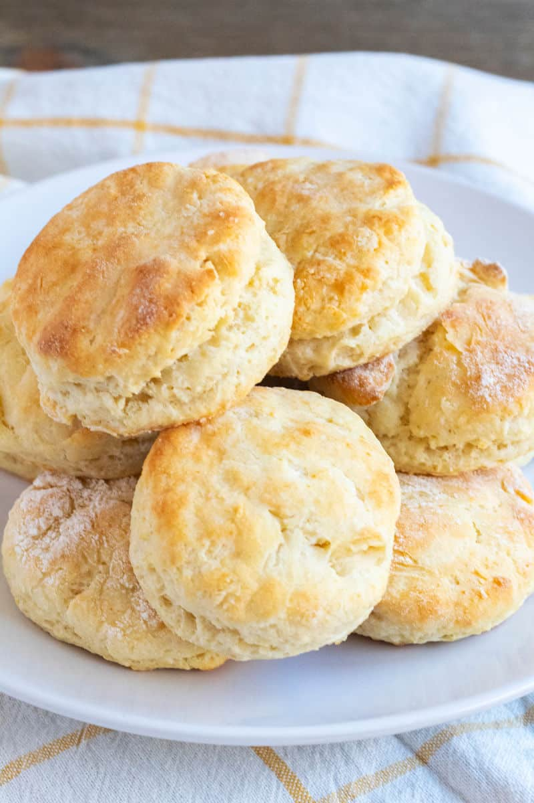

Brian's Almost Famous Almost Buttermilk Biscuits
Description
This biscuit recipe was developed after years of trial and error and was developed by combining the best parts of numerous recipes and techniques over those years. The result is a batch of 8-10 fluffy and delicious southern "Buttermilk" biscuits.
Ingredients
- 2 Cups flour (I prefer Wheat Montana)
- 1 Cup Milk
- 1 Tbsp White Vinegar
- 1 Tbsp Baking Powder
- 1/4 tsp Cream of Tartar
- 1/4 tsp Baking Soda
- 1 tsp Salt
- 1 Egg lightly beaten
- 5 Tbsp Butter cut into cubes
Steps
- Pre-heat oven to 425 degrees
- In a small bowl mix together milk and vinegar and set aside.
- In a large bowl mix all of the dry ingredients.
- Using a pastry cutter, two knives, or a fork cut in the butter until the butter is the size of large peas (roughly the size of the end of your pinky finger).
- Mix in the milk and egg until the flour has been incorporated (do not over mix because it will result in dense biscuits).
- Pour the dough out onto a floured surface and fold/kneed about 3 times and then roll out to about 1/2 inch thick.
- Using a cup, 2 inch cookie cutter, or other device cut biscuits to desired size out of the dough and place on a cookie sheet with the sides touching.
- Put the cookie sheet with the biscuits in the preheated oven and bake for 13-15 minutes or until the tops are golden brown.
- (Optional) Half way through cooking brush the tops with butter (This will help make the tops a little more flaky).